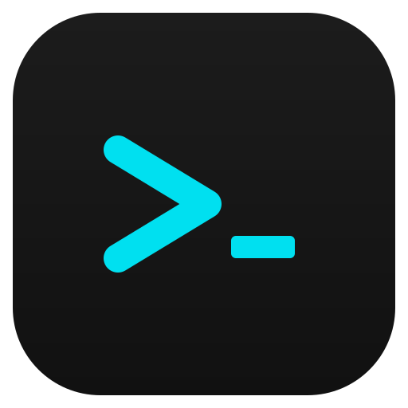

See it in action
A terminal built for the modern developer
Split panes, AI suggestions, and a command palette -- all in a sleek, GPU-accelerated interface.


The AI-powered terminal multiplexer.
Split, organize, and supercharge your workflow with Claude intelligence built in.
Features
Terminator replaces your terminal, tmux, and half your DevOps dashboard. Built for developers who demand more.
Claude-powered ghost text suggestions as you type. Launch Claude Code sessions for inline AI assistance directly from any pane.
Horizontal and vertical splits, tabs, and flexible grid layout with drag-to-resize. Zoom any pane to fullscreen and back.
Toggle a sidebar with project grouping, editor-style tabs, and single-pane focus. Think VS Code's terminal, but it is the whole app.
Cmd+P opens a searchable palette for every action: switch panes, change themes, open SSH bookmarks, run snippets, and more.
Define and run multi-step command pipelines. View and manage cron jobs visually. Automate complex workflows with ease.
Save your entire workspace -- layout, directories, scroll history -- and auto-restore on next launch. Never lose your setup again.
Save SSH connections, manage bookmarks from the UI, and discover running tmux and screen sessions on remote hosts.
View listening ports, identify processes, and kill them from a built-in UI. See Docker containers with status, image, and uptime.
Dark, Solarized Dark, Dracula, Monokai, Nord, and Light. Cycle through themes with a single keyboard shortcut.
List running containers with status, image, and uptime at a glance. Manage your containerized environments without leaving the terminal.
Control Terminator from any shell: create, list, attach, send commands, and kill sessions. Full Zsh tab completion included.
Send keystrokes to every pane simultaneously. Ideal for configuring multiple servers at once or running identical commands.
See it in action
Split panes, AI suggestions, and a command palette -- all in a sleek, GPU-accelerated interface.
Keyboard-first
Every action is one shortcut away. On Windows and Linux, substitute Ctrl for Cmd.
| Shortcut | Action |
|---|---|
| Cmd + D | Split pane right |
| Cmd + Shift + D | Split pane down |
| Cmd + T | New tab |
| Cmd + W | Close pane |
| Cmd + P | Command palette |
| Cmd + F | Find in terminal |
| Cmd + K | Clear terminal |
| Cmd + Shift + Enter | Zoom / unzoom pane |
| Cmd + Shift + B | Toggle broadcast mode |
| Cmd + Shift + S | Save session |
| Cmd + Arrow | Navigate between panes |
| Ctrl + Shift + T | Cycle theme |
Get started
Available on macOS, Windows, and Linux. Choose the method that works for you.
Recommended for macOS
brew install --cask terminator-terminal
macOS (.dmg) / Windows (.exe) / Linux (.AppImage)
# Grab the latest release from GitHub github.com/suvash-glitch/Terminator/releases
For contributors and tinkerers
git clone https://github.com/suvash-glitch/Terminator.git cd Terminator npm install npm run rebuild # rebuild node-pty npm start